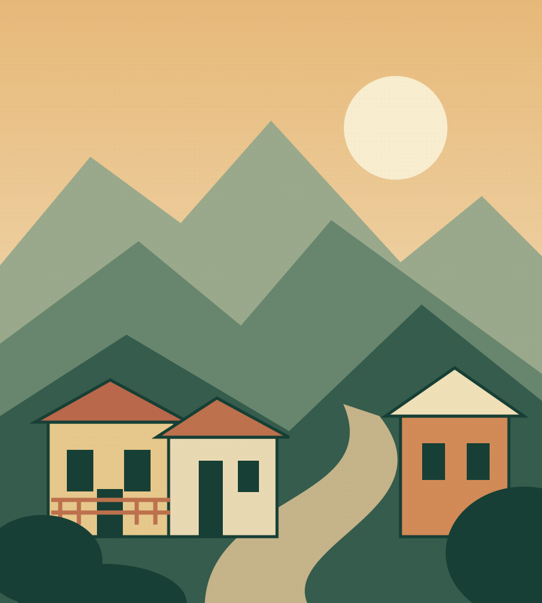

Destino inicial
Jericó, Antioquia
Una invitación a caminar sin afán y a conocer el lugar a través de su gente.
¿Tu negocio está aquí? Conversemos ↗Colombia, a tu ritmo
Hay lugares que no solo se visitan.
Se caminan, se saborean y se llevan contigo.
Conecta con destinos y con las personas que les dan vida. Nuestra historia comienza en Jericó, Antioquia.

El inicio del camino
Estamos dando forma a nuestra primera selección de aliados. Queremos que encuentres dónde quedarte, qué probar y con quién vivir el destino.
Una invitación a caminar sin afán y a conocer el lugar a través de su gente.
¿Tu negocio está aquí? Conversemos ↗Saborear
Buscamos restaurantes y comercios que compartan el sabor y la identidad local.
Conectar
Queremos conocer anfitriones y experiencias que acerquen al viajero al territorio.
Ilustraciones de marca. La selección de establecimientos y experiencias está en construcción; aún no ofrecemos reservas.
Nuestra esencia
Explorando Lugares nace para acercar a viajeros curiosos y negocios locales. Queremos que descubrir un destino también sea conocer a quienes lo hacen especial.
Comenzamos en Jericó y dejamos abierta la ruta a otros lugares. Con cercanía, curiosidad y respeto por cada comunidad.
Construyamos esta ruta juntos ↗Para quienes dan vida al destino
Crea tu comercio, hotel o experiencia turística con nosotros. Cuéntanos qué haces y conversemos sobre cómo presentar tu propuesta en Explorando Lugares.
Desde una habitación acogedora hasta una estadía con historia. Dale un espacio a tu hospitalidad.
Quiero presentar mi alojamiento ↗Artesanía, diseño y productos con identidad. Conecta tu comercio con nuevas miradas.
Quiero presentar mi comercio ↗La cocina también es una forma de conocer un lugar. Comparte lo que hace especial tu mesa.
Quiero presentar mi restaurante ↗Recorridos, talleres y encuentros. Cuéntanos cómo acercas a los viajeros a tu territorio.
Quiero presentar mi experiencia ↗01 Cuéntanos sobre tu negocio.
02 Revisamos juntos tu propuesta.
03 Definimos contenido y próximos pasos.
Etapa de lanzamiento: las condiciones de participación se acuerdan directamente. No hay publicación automática ni cobros desde esta página.
Hagamos parte del mismo viaje
Empezamos en Jericó. Si estás en otro destino, también queremos conocer tu propuesta.
Los canales de contacto se anunciarán pronto. Puedes preparar y copiar tu mensaje aquí.
Antes de emprender el camino
Estamos en etapa de lanzamiento y convocatoria de aliados. Esta versión no procesa reservas, pagos ni disponibilidad.
Jericó es nuestro destino inicial. También recibimos propuestas de otros lugares para explorar la expansión de la marca.
Cuéntanos su nombre, ubicación, categoría y qué lo hace especial. En la conversación definiremos los contenidos y las condiciones de participación.